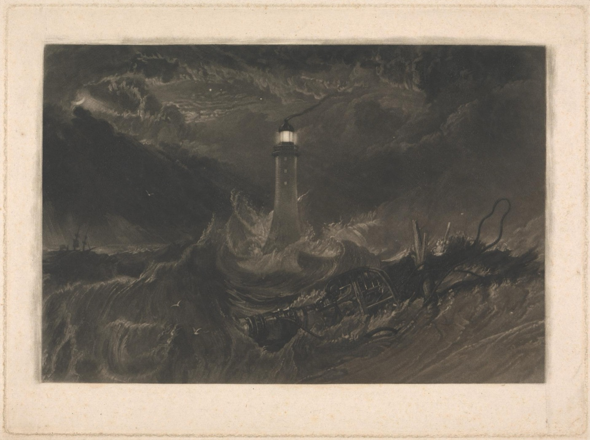
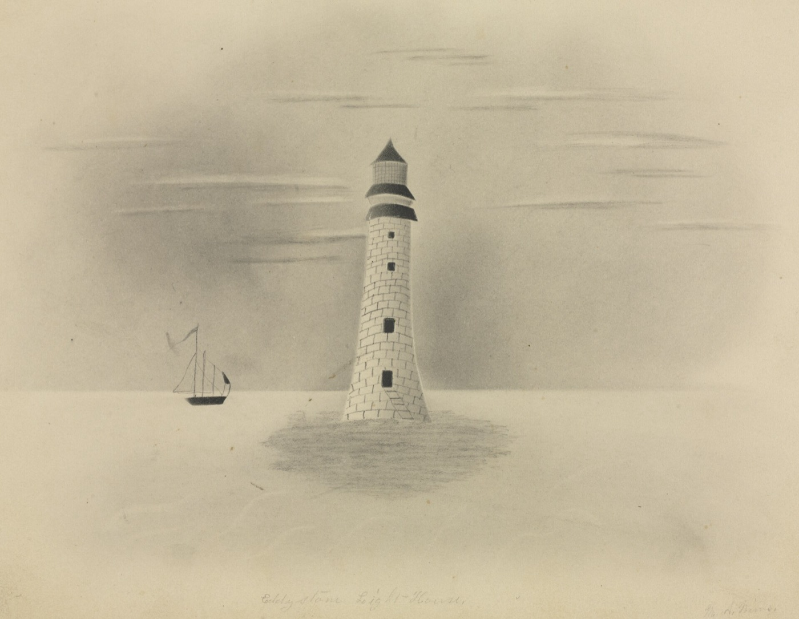

Four towers on one rock
The Eddystone Rocks lie about twelve miles off Plymouth and are mostly under water at high tide. Four lighthouses have stood on them.

Winstanley and Rudyerd
Henry Winstanley finished the first tower in 1698. The Great Storm of 1703 swept it away with him inside. John Rudyerd built the second in timber in 1709, and it burned down in 1755.
Smeaton
John Smeaton's granite tower of 1759 used dovetailed stones and shaped its base after the trunk of an oak. The rock under it eroded, so its upper part was taken down and rebuilt on Plymouth Hoe, where it still stands.
Douglass
James Douglass built the current tower on a neighbouring reef. It was lit in 1882, stands 49 metres tall and has run without a resident keeper since 1982.
